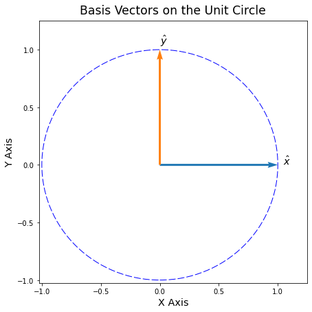
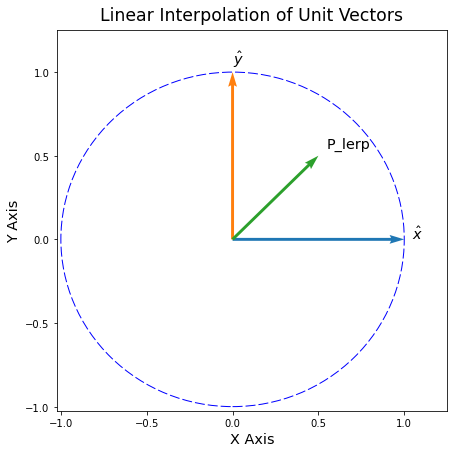
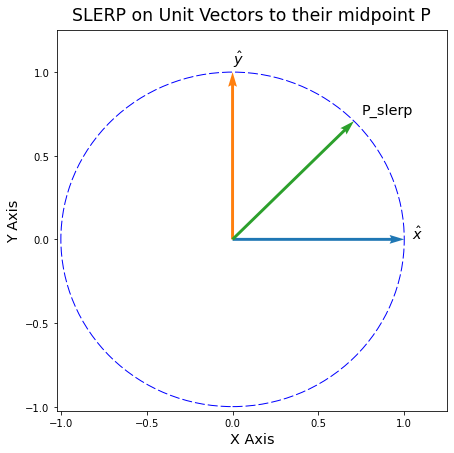

import torch
# use the X and Y unit vectors as an example
xhat = torch.tensor([1, 0]).float()
yhat = torch.tensor([0, 1]).float()A PyTorch SLERP implementation
diffusion
latent interpolation
SLERP
SLERP implemented in PyTorch with proper thresholding.
Introduction
This notebook introduces a native PyTorch implementation of SLERP.
SLERP stands for “Spherical Linear Interpolation”. It is an extension of linear interpolation that preserves the length of the input vectors. We go over why preserving length is important in the Background section below.
In future posts, we will use SLERP to combine the latent vectors of Diffusion models.
Background
Why do we need SLERP?
Note
If you don’t need the theory, you can skip straight to the code.
SLERP interpolates two vectors while keeping their magnitudes intact. Why would this be important for Diffusion models?
The reason has to do with how Gaussian distributions behave in higher dimensions. This blog post by Ferenc Huszár has an excellent description of how exactly our intuitions fall apart in high dimensions. The post also has many good visualizations to drive the point home.
Gaussians in high dimensions
To summarize Ferenc’s blog post: a Gaussian in high dimensions is fundamentally different than its 1-D “Bell curve” version.
As we climb to higher dimensions the Gaussian distribution becomes a thin, hollow shell. Its probability density spreads out around this thin shell. Think about how different that is to a 1-D Gaussian. In the 1-D case, most of the density falls within a few standard deviations of the mean.
Before long, the inside of this high-dimensional Gaussian is empty. Only its thin shell has any probability at all. Borrowing Ferenc’s excellent analogy: the distribution turns into a “soap bubble”.
Recall that most Diffusion models are based on high-dimensional Gaussians. That means that, in Diffusion, we are actually dealing with many high-dimensional soap bubbles. If we treat them like regular 2-D or 3-D vectors, our intuitions will fail us.
Ok, so where does SLERP come in?
If we linearly interpolate two high-dimensional Gaussians, the result can easily fly away from the soap bubble’s surface. The section below has an example of what this looks like in 2-D space.
SLERP makes it possible to properly interpolate Diffusion vectors by keeping us firmly grounded on the surface of the soap bubble.
What about linear interpolation?
Regular linear interpolation (sometimes called LERP) is a powerful tool. It is a cornerstone in modern computer graphics to move an object between two points.
LERP has a loose analogy with gravity: the shortest distance between two points is a straight line.
For example, imagine you are drinking a cup of coffee. The mug is currently on the table. As you go to take a sip, you pick up the mug and bring it directly to your lips. You wouldn’t swing your arm around in a weird way. That would only be more work and delay the sip of coffee.
In other words, when moving objects in our 3-D world we want to do the least amount of work possible. That is what LERP does in 2-D and 3-D space. In a manner of speaking, you used LERP to bring the coffee mug to your lips and take a sip.
This coffee example brings us back to why we need SLERP in the first place. Our notions of 3-D paths break down in higher dimensions, and LERP does not work as intended. Here we are much better served by SLERP.
A concrete LERP example
Let’s show how linear interpolation works on vectors.
For this example we will use the familiar \(x\) and \(y\) basis vectors. We also draw the Unit Circle for reference.
Note
The plotting function plot_vectors is available in the post’s notebook. It is omitted here for space.
# plot the basis vectors, with a unit circle outline
fig = plot_vectors(xhat, yhat, labels=['$\hat{x}$', '$\hat{y}$'], draw_unit_circle=True)
plt.xlabel('X Axis', fontsize='x-large')
plt.ylabel('Y Axis', fontsize='x-large')
plt.title('Basis Vectors on the Unit Circle', fontsize='xx-large', pad=10);
What happens if we linearly interpolate (LERP) these vectors to their midpoint?
# use linear interpolation to find the midpoint
p_lerp = (xhat + yhat) / 2# plotting the LERP of basis vectors x and y
fig = plot_vectors(xhat, yhat, p_lerp, labels=['$\hat{x}$', '$\hat{y}$', 'P_lerp'])
plt.xlabel('X Axis', fontsize='x-large')
plt.ylabel('Y Axis', fontsize='x-large')
plt.title('Linear Interpolation of Unit Vectors', fontsize='xx-large', pad=10);
If we only cared about getting from \(\hat{y}\) to \(\hat{x}\) then we are on the right track. LERP is following the shortest possible path.
But imagine if the Unit Circle was like a slice of a high-dimensional Gaussian. In that case, linear interpolation has moved us away from the surface of the soap bubble!
If we were dealing with a 1-D Gaussian, it’s as if we have moved very far from the mean. Imagine going out \(+10\) \(\sigma\) away. That would obviously be an incredibly unlikely sample. And that is exactly where the \(P_\text{LERP}\) vector ends up.
With SLERP, we can still interpolate the vectors while also staying firmly anchored to the soap bubble.
SLERP Implementation
The code below is a refactor of a great numpy implementation by @xsteenbrugge. There is an example of it in Andrej Karpathy’s Diffusion video script.
We also compare our SLERP to a short PyTorch implementation from @ptrblck_de in the pytorch forums.
This version of SLERP is in pure pytorch. It doesn’t cast tensors to and from numpy. But, if GPU memory is at a premium, there is a flag to_cpu to compute SLERP on the CPU instead.
Our SLERP implementation has a threshold on the dot product to avoid nans if the vectors are too close to parallel. Finally, this SLERP also has a zdim argument to handle sequences of vectors.
import torch
def slerp(v1, v2, t, DOT_THR=0.9995, to_cpu=False, zdim=-1):
"""SLERP for pytorch tensors interpolating `v1` to `v2` with scale of `t`.
`DOT_THR` determines when the vectors are too close to parallel.
If they are too close, then a regular linear interpolation is used.
`to_cpu` is a flag that optionally computes SLERP on the CPU.
If the input tensors were on a GPU, it moves them back after the computation.
`zdim` is the feature dimension over which to compute norms and find angles.
For example: if a sequence of 5 vectors is input with shape [5, 768]
Then `zdim = 1` or `zdim = -1` computes SLERP along the feature dim of 768.
Theory Reference:
https://splines.readthedocs.io/en/latest/rotation/slerp.html
PyTorch reference:
https://discuss.pytorch.org/t/help-regarding-slerp-function-for-generative-model-sampling/32475/3
Numpy reference:
https://gist.github.com/dvschultz/3af50c40df002da3b751efab1daddf2c
"""
# check if we need to move to the cpu
if to_cpu:
orig_device = v1.device
v1, v2 = v1.to('cpu'), v2.to('cpu')
# take the dot product between normalized vectors
v1_norm = v1 / torch.norm(v1, dim=zdim, keepdim=True)
v2_norm = v2 / torch.norm(v2, dim=zdim, keepdim=True)
dot = (v1_norm * v2_norm).sum(zdim)
# if the vectors are too close, return a simple linear interpolation
if (torch.abs(dot) > DOT_THR).any():
print(f'warning: v1 and v2 close to parallel, using linear interpolation instead.')
res = (1 - t) * v1 + t * v2
# else apply SLERP
else:
# compute the angle terms we need
theta = torch.acos(dot)
theta_t = theta * t
sin_theta = torch.sin(theta)
sin_theta_t = torch.sin(theta_t)
# compute the sine scaling terms for the vectors
s1 = torch.sin(theta - theta_t) / sin_theta
s2 = sin_theta_t / sin_theta
# interpolate the vectors
res = (s1.unsqueeze(zdim) * v1) + (s2.unsqueeze(zdim) * v2)
# check if we need to move them back to the original device
if to_cpu:
res.to(orig_device)
return resSLERP interpolation of the unit vectors
What happens if we instead use SLERP to interpolate the unit vectors?
# SLERP the unit vectors to their midpoint
p = slerp(xhat, yhat, 0.5)# plot the SLERP iterpolated vector
fig = plot_vectors(xhat, yhat, p, labels=['$\hat{x}$', '$\hat{y}$', "P_slerp"])
plt.xlabel('X Axis', fontsize='x-large')
plt.ylabel('Y Axis', fontsize='x-large')
plt.title('SLERP on Unit Vectors to their midpoint P', fontsize='xx-large', pad=10);
That looks much better!
If the Unit Circle was like a Gaussian soap bubble, then we’ve properly moved along its film.
Conclusion
This notebook described SLERP and its advantages over regular linear interpolation.
We also presented a PyTorch version of SLERP. This version handles vectors that are too close together, optionally moves computations to the CPU, and handles batched vectors.
Lastly, we drew some examples to make it clear why SLERP is better at interpolating high-dimensional vectors.